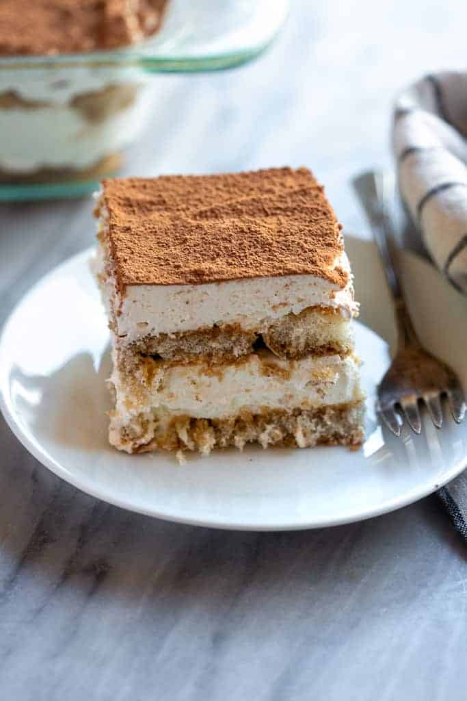

Tiramisu
This dessert is very fast and easy to prepare.

alt="tiramisu dessert"
Ingredients
- 1 cup or 8 fl oz of heavy whipping cream
- 1 cup or 8 fl oz of mascarpone cheese a room temperature
- 1/3 cup of sugar
- 1 teaspoon of vanilla extract
- 2 cups or 16 oz strong coffee or espresso at room temperature
- 1 package of ladyfingers
- cocoa powder for dusting the top of the dessert
- 8x8 pan
Instructions
- Beat the whipping cream, sugar and vanilla until soft peaks form.
- Add the mascarpone cheese and whip the mixture until stiff peaks form
- Dip the ladyfingers once into the coffee.
- Line the coffee dipped ladyfingers into the 8x8 pan so that a layer is formed.
- Spread half the cream mixture over the ladyfinger layer.
- Repeat one more layer of coffee dipped ladyfingers over the cream layer.
- Spread the remaining cream layer over the second layer of ladyfingers.
- Dust the top of the dessert with the cocoa powder. A sieve can be used for dusting the cocoa powder.
- Refrigerate the dessert for 2 to 4 hours. Enjoy.